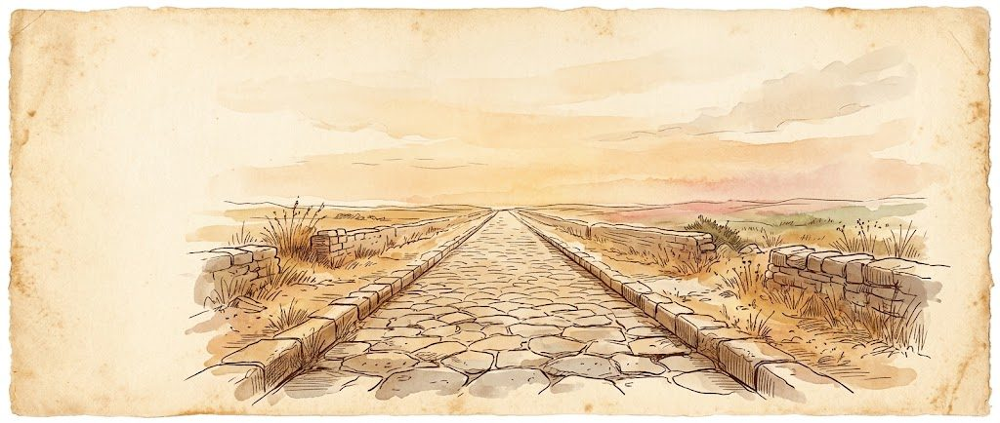
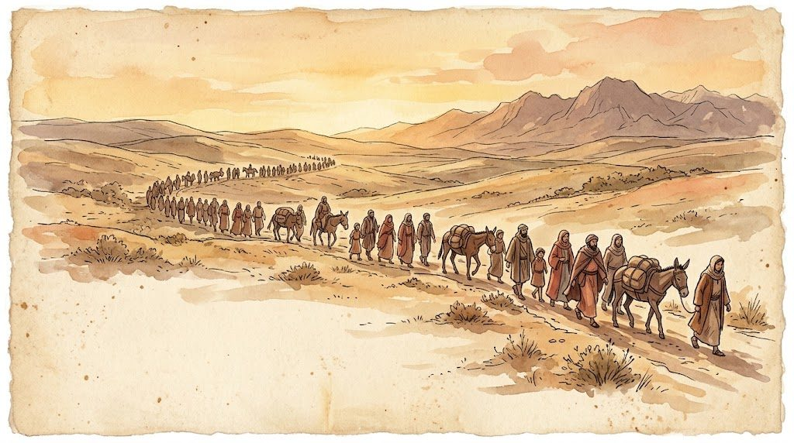
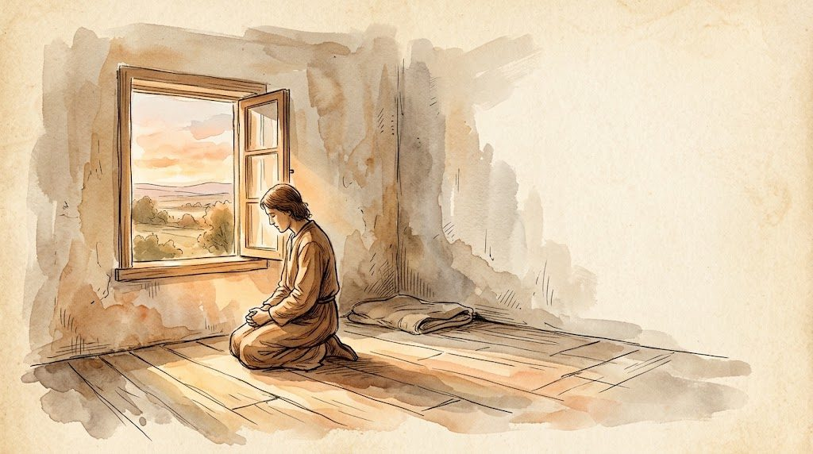
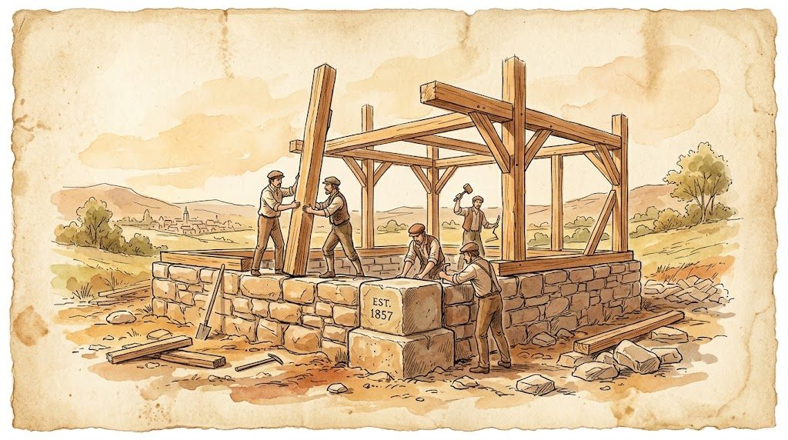
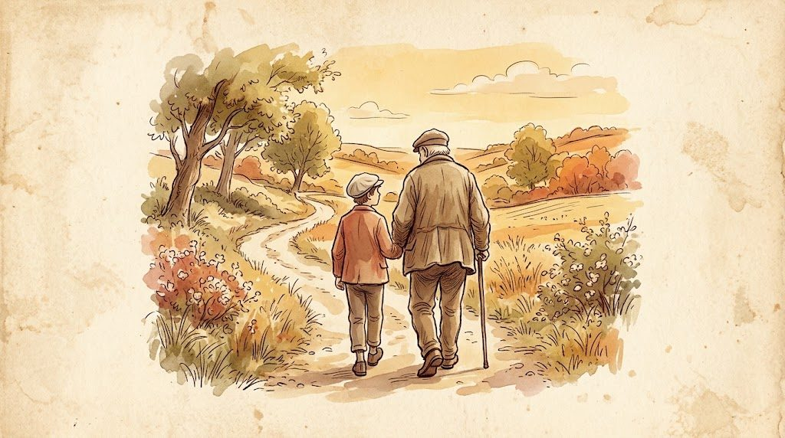
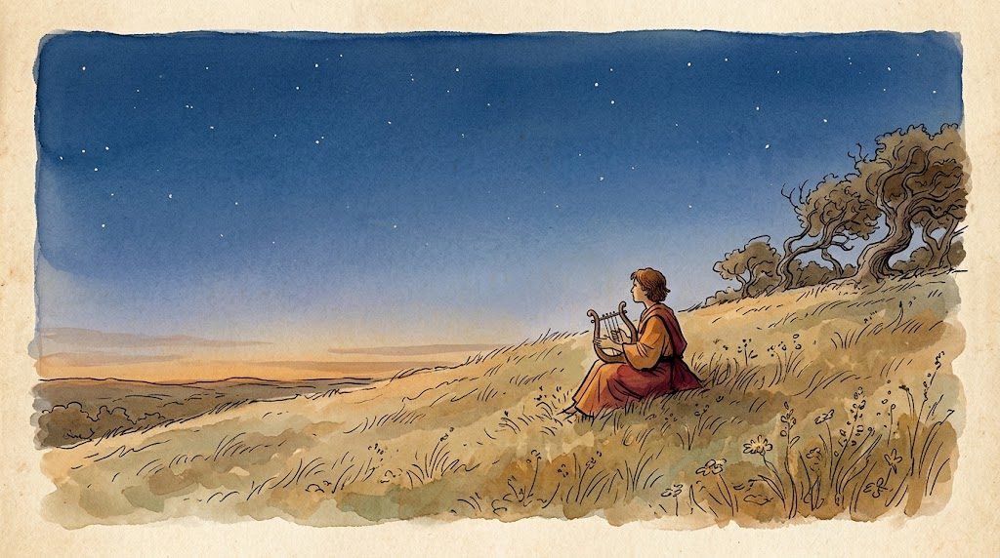
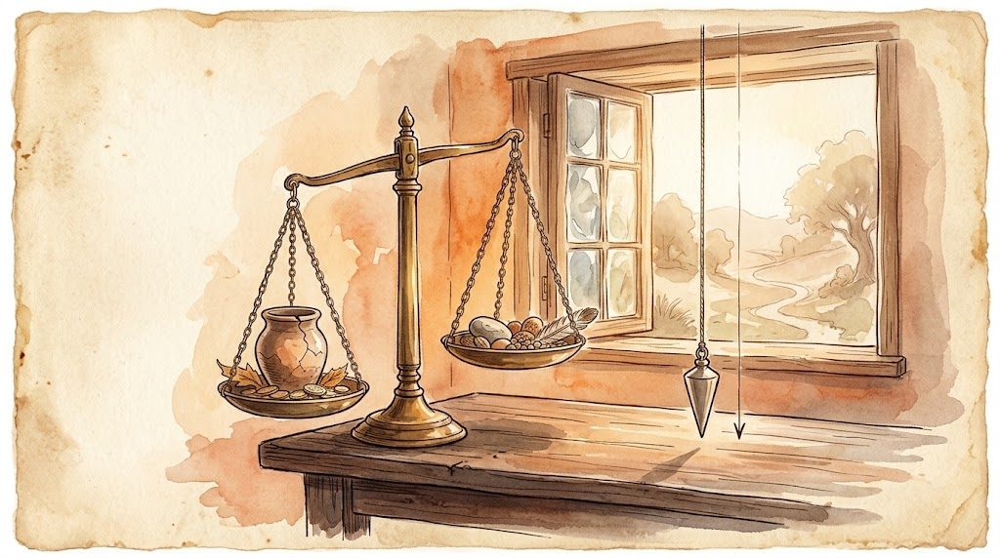
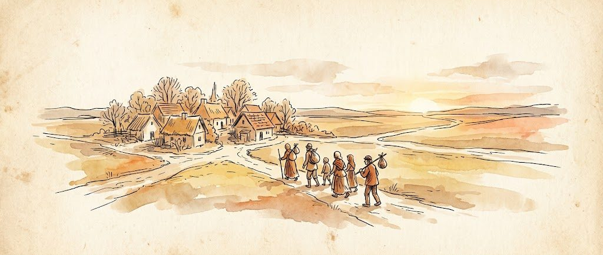

Formação do Obreiro I · Módulo 1
Tópico 3 — Vocação e ofícios
Efésios 4.11-12 · uns 20 minutos
12% do curso
Continue de onde parou.
Formação do Obreiro I · Módulo 1
Efésios 4.11-12 · uns 20 minutos
Por onde começar? O Formação do Obreiro I é o curso aberto agora.
Começar o curso →
Panorama da Bíblia

Como Estudar a Bíblia
O Evangelho de João

Romanos

O Antigo Testamento em Panorama

Vida de Oração

Doutrinas Essenciais da Fé Cristã

Discipulado — Os Primeiros Passos

Salmos

Caráter Cristão

Missões e Evangelismo